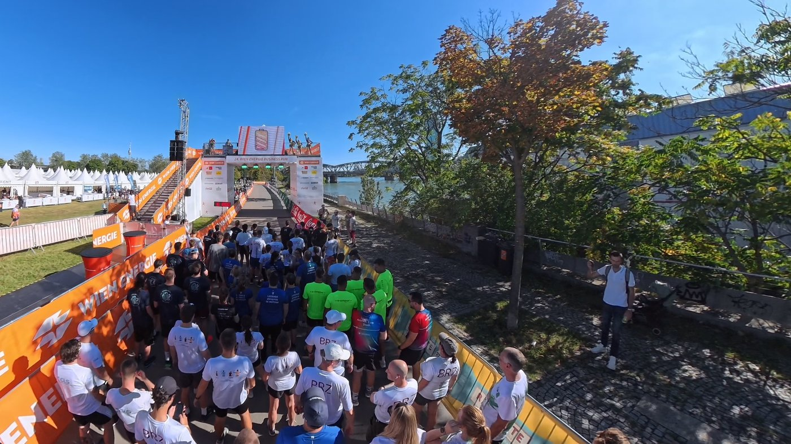
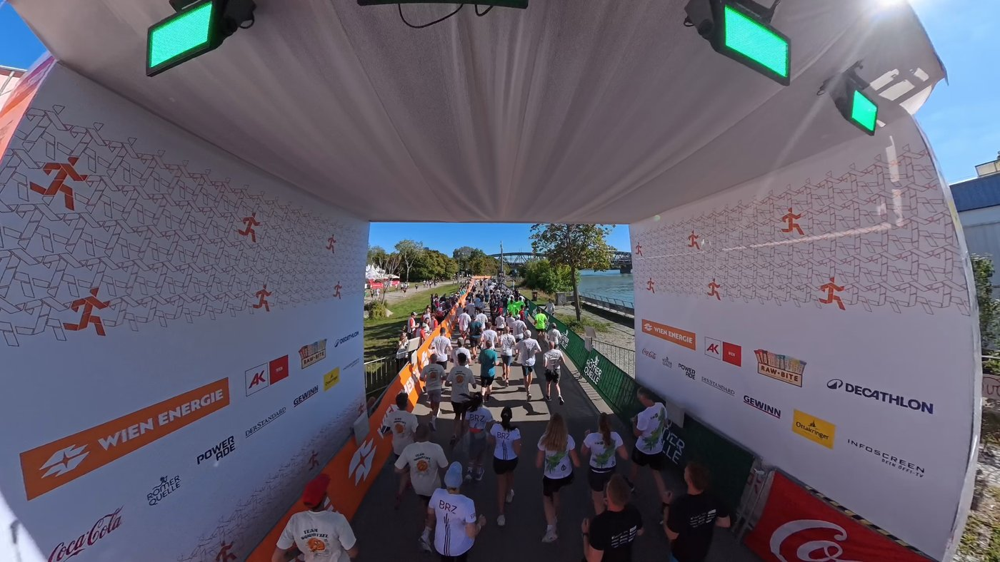
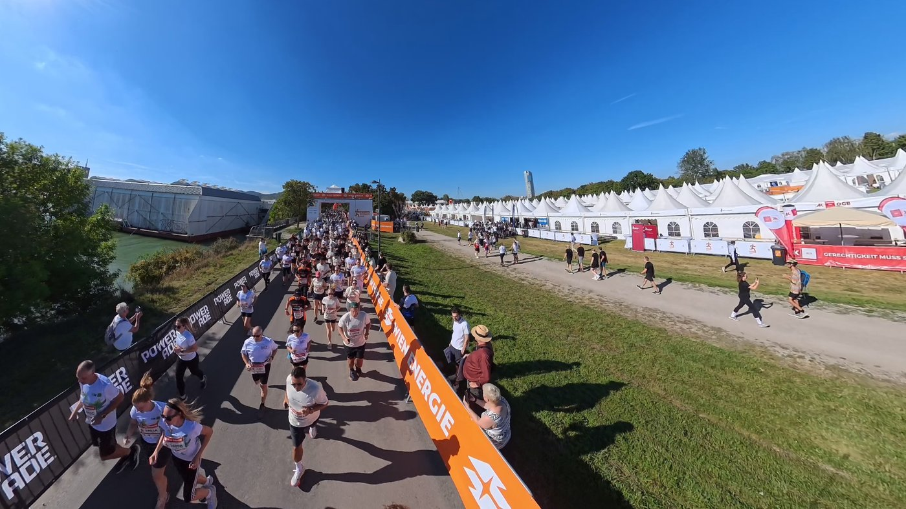

(Case 07) Event-Content
Wien Energie Business Run
Event-Content für den Wien Energie Business Run in Wien — von den Startblöcken an der Donau bis zu den Videos für den Kick-off der 25. Ausgabe.

Die Aufgabe
Die Dimension des Laufs zeigen — tausende Läuferinnen und Läufer, eine Startlinie — und aus 25 Ausgaben Content für die Menschen machen, die ihn möglich machen.
Was wir gemacht haben
- 360°-Aufnahmen vor Ort
- Social Reels
- Videos für den Run-&-Connect-Kick-off (25. Ausgabe)
- Podcast-Aufnahme


Du planst etwas in der Art?
Projekt starten →